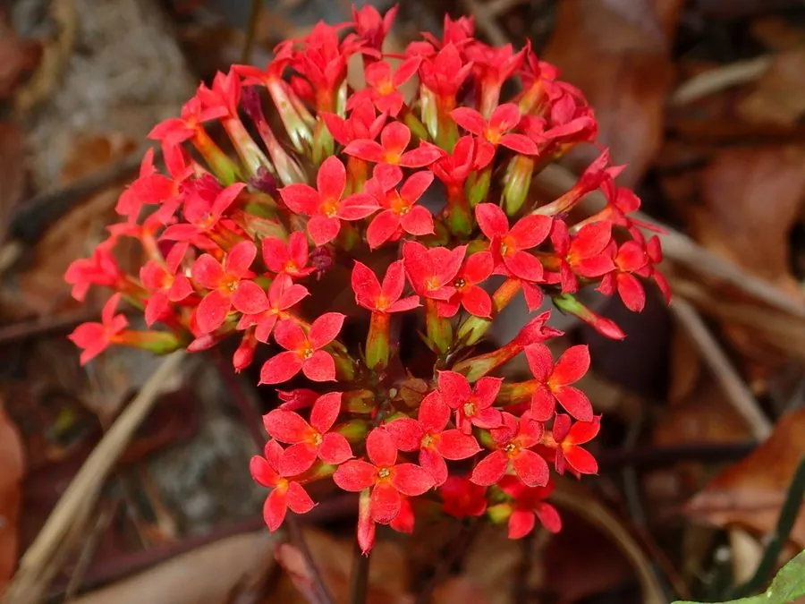

多肉植物 · 植物界
长寿花 Kalanchoe blossfeldiana

景天科多年生肉质草本，花期自冬至春长达数月，花色明艳、寓意长寿，是常见的年宵花和阳台盆栽。
- 分类
- 门被子植物门纲木兰纲目虎耳草目科景天科属伽蓝菜属
- 栖息环境
- 马达加斯加岛的干燥灌丛与林缘，喜温暖、阳光充足
- 地理分布
- 原产马达加斯加，世界各地广泛盆栽，中国各地常见
- 保护级别
- 暂无评估
物种志
长寿花为景天科伽蓝菜属多年生肉质草本，株高 20–40 厘米，茎直立，多分枝。叶片肉质，深绿色，卵形至长圆状匙形，边缘有圆齿。聚伞花序顶生，花小，直径约 1 厘米，四瓣，有红、粉、橙、黄、白等色，花期 12 月至翌年 4 月；果实为蓇葖果。
长寿花原产马达加斯加岛，喜温暖、阳光充足和通风良好的环境，耐旱怕积水，不耐寒，冬季需保持 10℃ 以上。它是短日照植物，秋末日照缩短后形成花芽，栽培中常用遮光处理调节花期，使其在元旦、春节期间开放。叶片和茎节扦插都容易成活，花期长、管理简单，是极受欢迎的室内盆栽，但汁液对宠物有一定刺激性，应避免误食。
形态与习性
- 株高20–40 厘米，茎直立多分枝
- 花期12 月至翌年 4 月，单株花期可达 3–4 个月
- 果期花后结蓇葖果
- 光照喜充足阳光，短日照促进花芽分化
- 水分耐旱，盆土干透再浇，忌积水
- 土壤疏松透气、排水良好的沙壤土
- 繁殖茎插、叶插均可
- 主要用途年宵花、阳台盆栽观赏
趣味知识
- 长寿花是短日照植物，秋季日照缩短后才形成花芽，可通过遮光调节花期。
- 单株花期可达 3–4 个月，因花期长、寓意好而成为年宵花主角。
- 叶插时把叶片连叶柄摘下，平放在微潮土面上即可生根。
- 它的汁液对猫狗有刺激性，应放在宠物不易碰到的地方。